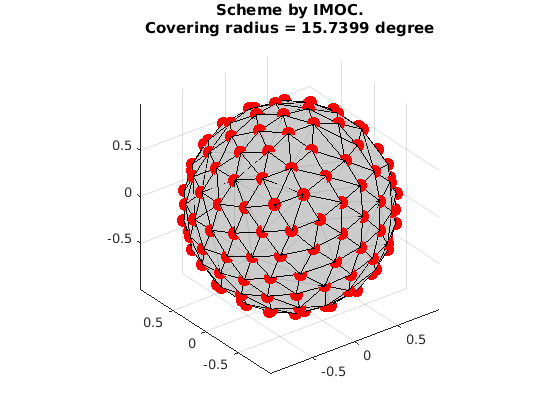
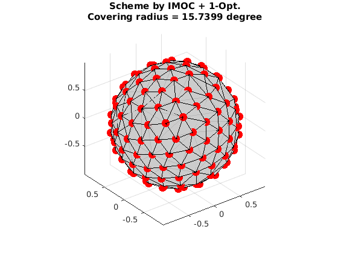
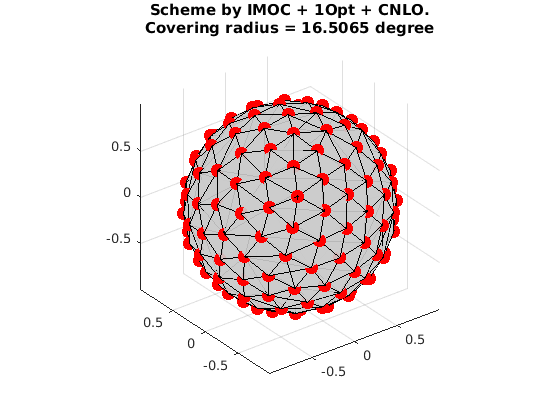
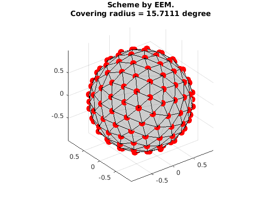
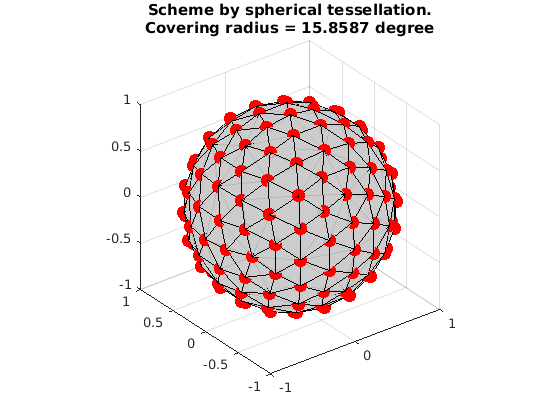

Generate a single shell scheme by using IMOC + 1-Opt + CNLO
This is a demo to generate a single-shell scheme with 81 samples by using IMOC + 1-Opt + CNLO.
OptimalSamplingSingleShellCNLO is in matlab. But to run IMOC and 1-Opt, you need to build the dmritool C++ codes.
Reference:
1. "Single- and Multiple-Shell Uniform Sampling Schemes for Diffusion MRI Using Spherical Codes", Jian Cheng, Dinggang Shen, Pew-Thian Yap, Peter J. Basser, IEEE Transactions on Medical Imaging, 2017.
2. "Novel single and multiple shell uniform sampling schemes for diffusion MRI using spherical codes", Jian Cheng, Dinggang Shen, Pew-Thian Yap, Peter J. Basser, MICCAI 2015.
Copyright (c) 2016, Jian Cheng (jian.cheng.1983@gmail.com)
Contents
- IMOC to design a single shell scheme (81 samples)
- IMOC + 1-Opt to design a single shell scheme (81 samples)
- IMOC + 1-Opt + CNLO to design a single shell scheme (81 samples)
- Compared with the single shell scheme with 81 samples by EEM in CAMINO
- Compared with the single shell scheme with 81 samples by spherical tessellation
IMOC to design a single shell scheme (81 samples)
tic ! SamplingSchemeQSpaceIMOCEstimation grad_81_IMOC.txt --tessOrder 7 --numberOfSamples 81 toc grad_IMOC = ReadDirections('grad_81_IMOC_shell1.txt'); fprintf('\nConvering radius:\t %10.3f\n',CoveringRadius(grad_IMOC)*180/pi); VisualizeMultiShellScheme(grad_IMOC); title({'Scheme by IMOC.', ['Covering radius = ', num2str(CoveringRadius(grad_IMOC)*180/pi), ' degree']});
Elapsed time : 9.17745 save orientations in shell 1 to grad_81_IMOC_shell1.txt Elapsed time is 9.321357 seconds. Convering radius: 15.740
IMOC + 1-Opt to design a single shell scheme (81 samples)
tic ! SamplingSchemeQSpace1OptEstimation grad_81_IMOC1Opt.txt --initial grad_81_IMOC_shell1.txt --tessOrder 7 toc grad_IMOC1Opt = ReadDirections('grad_81_IMOC_shell1.txt'); fprintf('\nConvering radius:\t %10.3f\n',CoveringRadius(grad_IMOC1Opt)*180/pi); VisualizeMultiShellScheme(grad_IMOC1Opt); title({'Scheme by IMOC + 1-Opt.', ['Covering radius = ', num2str(CoveringRadius(grad_IMOC1Opt)*180/pi), ' degree']});
Elapsed time : 3.21282 save orientations in shell 1 to grad_81_IMOC1Opt_shell1.txt Elapsed time is 3.335626 seconds. Convering radius: 15.740
IMOC + 1-Opt + CNLO to design a single shell scheme (81 samples)
clear param; % weight between individual shell and combined shell param.w = 0.5; % maxtime for running. param.maxtime = 600; param.verbose = 1; tic [grad_IMOC1Opt_CNLO,xopt, fopt, retcode] = OptimalSamplingSingleShellCNLO(grad_IMOC1Opt, param); toc fprintf('\nConvering radius:\t %10.3f\n',CoveringRadius(grad_IMOC1Opt_CNLO)*180/pi); VisualizeMultiShellScheme(grad_IMOC1Opt_CNLO); title({'Scheme by IMOC + 1Opt + CNLO.', ['Covering radius = ', num2str(CoveringRadius(grad_IMOC1Opt_CNLO)*180/pi), ' degree']});
Elapsed time is 43.513162 seconds. Convering radius: 16.506
Compared with the single shell scheme with 81 samples by EEM in CAMINO
grad_EEM = ReadDirections([getenv('HOME'), '/.dmritool/Data/ElectricRepulsion/Elec081.txt']); fprintf('\nConvering radius:\t %10.3f\n',CoveringRadius(grad_EEM)*180/pi); VisualizeMultiShellScheme(grad_EEM); title({'Scheme by EEM.', ['Covering radius = ', num2str(CoveringRadius(grad_EEM)*180/pi), ' degree']});
Convering radius: 15.711
Compared with the single shell scheme with 81 samples by spherical tessellation
grad_Tess = ReadDirections([getenv('HOME'), '/.dmritool/Data/Tessellation/directions_t3.txt']); fprintf('\nConvering radius:\t %10.3f\n',CoveringRadius(grad_Tess)*180/pi); VisualizeMultiShellScheme(grad_Tess); title({'Scheme by spherical tessellation.', ['Covering radius = ', num2str(CoveringRadius(grad_Tess)*180/pi), ' degree']});
Convering radius: 15.859